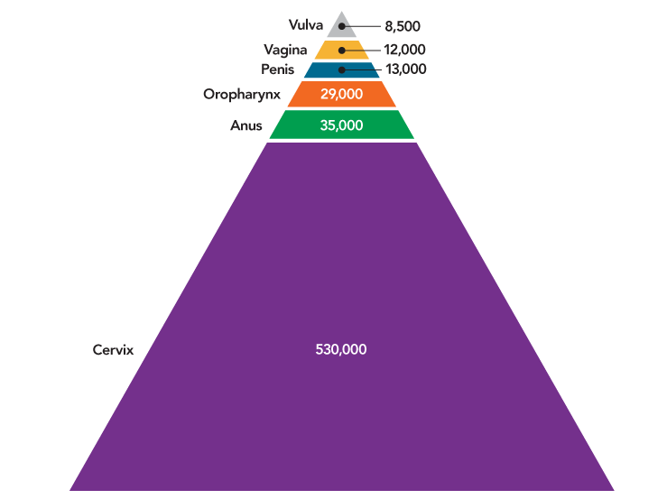

Goal 4: Promote Global HPV Vaccine Uptake
HPV was responsible for nearly 630,000 cases of cancer worldwide in 2012, the most recent year for which data are available (Figure 5). Although HPV causes multiple cancers, the vast majority of HPV cancers worldwide—530,000—are cervical cancers. Most HPV cancers could be prevented by currently available HPV vaccines.1 The potential impact of HPV vaccination is greatest in less developed countries.
Figure 5
Cancers Caused by HPV Worldwide
Source: de Martel C, Plummer M, Vignat J, Franceschi S. Worldwide burden of cancer attributable to HPV by site, country and HPV type. Int J Cancer. 2017;141(4):664-70. Available from: https://www.ncbi.nlm.nih.gov/pubmed/28369882; Note: de Martel et al. include cancers of the oral cavity and larynx in their estimate of HPV-attributable cancers. The U.S. Centers for Disease Control and Prevention has concluded that HPV causes some cancers of the oropharynx, but that the evidence that HPV causes cancers of the oral cavity and larynx is insufficient. Thus, numbers in this figure include estimates for oropharyngeal but not oral cavity and laryngeal cancers.
View Source
Source: de Martel C, Plummer M, Vignat J, Franceschi S. Worldwide burden of cancer attributable to HPV by site, country and HPV type. Int J Cancer. 2017;141(4):664-70. Available from: https://www.ncbi.nlm.nih.gov/pubmed/28369882; Note: de Martel et al. include cancers of the oral cavity and larynx in their estimate of HPV-attributable cancers. The U.S. Centers for Disease Control and Prevention has concluded that HPV causes some cancers of the oropharynx, but that the evidence that HPV causes cancers of the oral cavity and larynx is insufficient. Thus, numbers in this figure include estimates for oropharyngeal but not oral cavity and laryngeal cancers.
HPV Vaccination Is Low in Countries with Most Cervical Cancer Cases and Deaths
In 2014, it was estimated that fewer than 3 percent of 10- to 20-year-old girls in less developed regions had completed the HPV vaccine series.
The vast majority of cervical cancer cases and deaths occur in countries with lower levels of socioeconomic development.2 The number of cervical cancer deaths in less developed regions is predicted to increase by about 50 percent by 2030.3 Vaccination rates in less developed regions are disproportionately low. In 2014, it was estimated that fewer than 3 percent of 10- to 20-year-old girls in less developed regions had completed the HPV vaccine series, compared with 34 percent of girls in more developed regions.4 Despite the World Health Organization (WHO) recommendation that all countries vaccinate 9- to 14-year-old girls,5 as of May 2018, only 9 low- and lower-middle-income countries (LLMICs) had included the HPV vaccine in their national vaccination programs, compared with 70 high- and upper-middle-income countries.6
The disproportionate numbers of cervical cancer cases and deaths in less developed regions are due to the challenges of implementing cervical cancer screening programs, which have substantially reduced cervical cancer in many high-income countries, including the United States.7,8 While increasing HPV vaccination of adolescents will prevent future cancers in less developed regions, development and deployment of cost-effective screening programs are needed to alleviate the burden of cervical cancers among the current generation of women.9-11
HPV Vaccination Is Feasible in Low-Resource Settings
HPV vaccination in low- and middle-income countries has been supported by many organizations, including pharmaceutical companies; charitable organizations; PATH; the Pan American Health Organization (PAHO) Revolving Fund; and Gavi, the Vaccine Alliance.12 These organizations have supported small-scale demonstration projects, as well as national introductions of the HPV vaccine. Since 2013, most financial support for HPV vaccination programs in LLMICs has come from Gavi, an international public-private partnership focused on increasing access to immunization in lower-income countries.
Although the pace of vaccine introduction has been slower than hoped in low-resource settings, there are reasons to be encouraged. At least 45 low- and middle-income countries have gained experience with HPV vaccination through demonstration projects or national programs. These experiences have yielded important lessons and identified several factors that contribute to program success (see HPV Vaccination in Low- and Middle-Income Countries: Lessons Learned).
National programs and demonstration projects in LLMICs have been highly effective. Among 34 LLMICs with coverage data, nearly half delivered at least one dose to more than 90 percent of the target population of girls, and all of these programs achieved at least 60 percent coverage with at least one dose.13 In addition to being effective, these programs illustrate that many countries have the political will and recognition of the need to introduce the vaccine.
HPV Vaccination in Low- and Middle-Income Countries: Lessons Learned
Coordination and Planning
- Planning processes should include representatives from the ministries of health, education, and finance and other key experts.
- National immunization program involvement is critical for effective vaccine delivery.
- Proactive development of crisis communication plans will help address safety scares.
Communication and Education
- Social mobilization in communities should be initiated well in advance of vaccination campaigns.
- Messaging should focus on cervical cancer prevention; safety and efficacy, including lack of fertility impact and long-term adverse events; government endorsement; and vaccination logistics.
Delivery
- School-located delivery should be pursued if school attendance is high and resources allow. If school enrollment is low, a mixture of strategies may help attain good coverage. Out-of-school girls should have the opportunity to receive the vaccine.
Integration
- Once the first round of vaccination is complete, HPV vaccination should be gradually integrated into existing structures and processes for delivery of other vaccines.
Sources: Gallagher KE, Howard N, Kabakama S, et al. Lessons learnt from human papillomavirus (HPV) vaccination in 45 low- and middle-income countries. PLoS One. 2017;12(6):e0177773. Available from: https://www.ncbi.nlm.nih.gov/pubmed/28575074; World Health Organization. HPV vaccine communication: special considerations for a unique vaccine: 2016 update. Geneva (CH): WHO; 2016. Available from: http://apps.who.int/iris/bitstream/handle/10665/250279/WHO-IVB-16.02-eng.pdf
U.S. Support Is Needed to Promote Global HPV Vaccination
Many organizations—including WHO, PAHO, Gavi, and others—have increased access to HPV vaccines in many low-resource areas over the past ten years, and the United States has contributed to these efforts. The Panel Chair urges the United States to continue to support implementation and sustainability of HPV vaccination programs around the world, particularly in low- and middle-income countries.
Gavi remains the best mechanism for promotion of HPV vaccination in LLMICs. The United States—which contributed $275 million to Gavi in 201714—should continue its financial support of this partnership. U.S. agencies, including the Centers for Disease Control and Prevention (CDC) and National Cancer Institute (NCI), should continue working with other global health partners to promote HPV vaccination. Examples of valuable support include providing input on HPV vaccine-related policies and guidelines; offering technical and field support; and contributing to implementation research, such as research on the costs of national HPV vaccination programs.15,16 CDC and NCI also should continue to support cancer control planning and tumor registry activities in less developed regions. This will help countries gather the resources and data needed to make decisions about and measure effectiveness of HPV vaccination programs. The U.S. President’s Emergency Plan for AIDS Relief (PEPFAR) should promote HPV vaccination as part of its efforts to address the cervical cancer burden in HIV-infected women, including through the Partnership to End AIDS and Cervical Cancer.17
Research Priority: Test Effectiveness of One Dose
Additional evidence is needed on the efficacy and duration of protection of a single HPV vaccine dose. If one dose were sufficient, vaccination program costs could be considerably lower, which may lead to more widespread uptake worldwide.
The United States also can promote HPV vaccine uptake in less developed regions by funding research on ways to make vaccine distribution, storage, and administration easier and less expensive. In particular, additional evidence is needed on the efficacy and duration of protection provided by a single dose of the HPV vaccine. The shift to a two-dose schedule decreased the logistical challenges and costs of HPV vaccination. Delivery of one dose would be even easier and less costly, facilitating introduction and sustainability of HPV vaccination programs around the world.18,19 NCI and the Bill & Melinda Gates Foundation recently launched a clinical trial that will determine whether a single dose of the HPV vaccine works as well as two doses in young women.20 Results should be available in 2024. These types of trials should be supported to ensure that the benefits of HPV vaccination are provided with optimal cost-effectiveness.
Research Priority: Test Effectiveness of One Dose
Additional evidence is needed on the efficacy and duration of protection of a single HPV vaccine dose. If one dose were sufficient, vaccination program costs could be considerably lower, which may lead to more widespread uptake worldwide.
References
- Zhai L, Tumban E. Gardasil-9: A global survey of projected efficacy. Antiviral Res. 2016;130:101-9. Available from: https://www.ncbi.nlm.nih.gov/pubmed/27040313
- International Agency for Research on Cancer. Fact sheet: cervix uteri. Lyon (FR): IARC; 2018 Sep. Available from: http://gco.iarc.fr/today/data/factsheets/cancers/23-Cervix-Uteri-fact-sheet.pdf
- World Health Organization. Projections of mortality and causes of death, 2015 and 2030 [Internet]. Geneva (CH): WHO; [cited 2018 Aug 31]. Available from: http://www.who.int/healthinfo/global_burden_disease/projections/en
- Bruni L, Diaz M, Barrionuevo-Rosas L, et al. Global estimates of human papillomavirus vaccination coverage by region and income level: a pooled analysis. Lancet Glob Health. 2016;4(7):e453-63. Available from: https://www.ncbi.nlm.nih.gov/pubmed/27340003
- World Health Organization. Human papillomavirus vaccines: WHO position paper, May 2017-recommendations. Vaccine. 2017;35(43):5753-5. Available from: https://www.ncbi.nlm.nih.gov/pubmed/28596091
- World Health Organization. Vaccine in national immunization programme update. Geneva (CH): WHO; 2018 May. Available from: http://www.who.int/immunization/monitoring_surveillance/data/en
- Basu P, Meheus F, Chami Y, et al. Management algorithms for cervical cancer screening and precancer treatment for resource-limited settings. Int J Gynaecol Obstet. 2017;138(1 Suppl):26-32. Available from: https://www.ncbi.nlm.nih.gov/pubmed/28691336
- Holme F, Kapambwe S, Nessa A, et al. Scaling up proven innovative cervical cancer screening strategies: challenges and opportunities in implementation at the population level in low- and lower-middle-income countries. Int J Gynaecol Obstet. 2017;138(1 Suppl):63-8. Available from: https://www.ncbi.nlm.nih.gov/pubmed/28691331
- Campos NG, Castle PE, Wright TC Jr, Kim JJ. Cervical cancer screening in low-resource settings: a cost-effectiveness framework for valuing tradeoffs between test performance and program coverage. Int J Cancer. 2015;137(9):2208-19. Available from: https://www.ncbi.nlm.nih.gov/pubmed/25943074
- Mezei AK, Armstrong HL, Pedersen HN, et al. Cost-effectiveness of cervical cancer screening methods in low- and middle-income countries: a systematic review. Int J Cancer. 2017;141(3):437-46. Available from: https://www.ncbi.nlm.nih.gov/pubmed/28297074
- Campos NG, Sharma M, Clark A, et al. The health and economic impact of scaling cervical cancer prevention in 50 low- and lower-middle-income countries. Int J Gynaecol Obstet. 2017;138(1 Suppl):47-56. Available from: https://www.ncbi.nlm.nih.gov/pubmed/28691334
- Gallagher KE, Howard N, Kabakama S, et al. Lessons learnt from human papillomavirus (HPV) vaccination in 45 low- and middle-income countries. PLoS One. 2017;12(6):e0177773. Available from: https://www.ncbi.nlm.nih.gov/pubmed/28575074
- Gallagher KE, LaMontagne DS, Watson-Jones D. Status of HPV vaccine introduction and barriers to country uptake. Vaccine. 2018;36(32 Pt A):4761-7. Available from: https://www.ncbi.nlm.nih.gov/pubmed/29580641
- Gavi, the Vaccine Alliance. Funding and finance: donor profiles: United States of America—proceeds to Gavi from donor contributions & pledges (2016-2020) as of 31 December 2017 [Internet]. Geneva (CH): Gavi; [cited 2018 May 17]. Available from: http://www.gavialliance.org/funding/donor-profiles/united-states
- Senkomago V, Duran D, Loharikar A, et al. CDC activities for improving implementation of human papillomavirus vaccination, cervical cancer screening, and surveillance worldwide. Emerg Infect Dis. 2017;23(13). Available from: https://www.ncbi.nlm.nih.gov/pubmed/29155666
- Botwright S, Holroyd T, Nanda S, et al. Experiences of operational costs of HPV vaccine delivery strategies in Gavi-supported demonstration projects. PLoS One. 2017;12(10):e0182663. Available from: https://www.ncbi.nlm.nih.gov/pubmed/29016596
- The United States President's Emergency Plan for AIDS Relief. Renewed partnership to help end AIDS and cervical cancer in Africa [Press Release]. Washington (DC): PEPFAR; 2018 May 11. Available from: https://www.pepfar.gov/press/releases/281984.htm
- LaMontagne DS, Bloem PJN, Brotherton JML, et al. Progress in HPV vaccination in low- and lower-middle-income countries. Int J Gynaecol Obstet. 2017;138(1 Suppl):7-14. Available from: https://www.ncbi.nlm.nih.gov/pubmed/28691329
- Burger E, Campos N, Sy S, et al. Health and economic benefits of single-dose HPV vaccination in a Gavi-eligible country. Vaccine. 2018;36(32 Pt A):4823-9. Available from: https://www.ncbi.nlm.nih.gov/pubmed/29807710
- National Cancer Institute. Scientific evaluation of one or two doses of the bivalent or nonavalent prophylactic HPV vaccines—the ESCUDDO Study [Internet]. Bethesda (MD): NCI; [cited 2018 Jul 11]. Available from: https://dceg.cancer.gov/research/cancer-types/cervix/escuddo